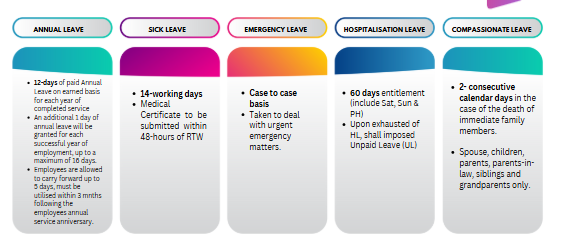
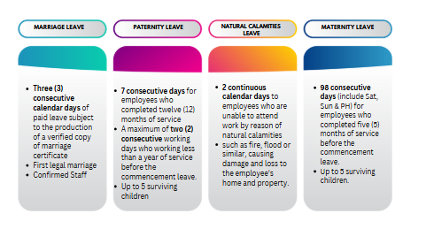
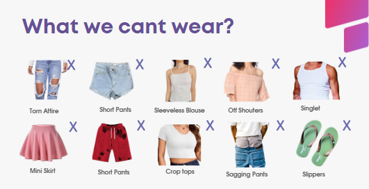
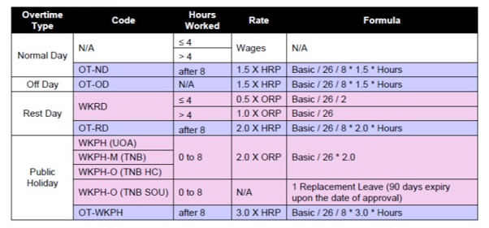

Welcome to Daythree!
Whether you are a new joiner or an existing employee, this portal is designed to help you quickly and easily access the information you need. Our goal is to make your transition smooth by providing easy access to HR information, employee benefits, and workplace resources—all in one place.
"Knowledge is only valuable when it's easy to access."
Daythree provides various types of leave to support employees' work-life balance and well-being.
Your leave entitlement depends on:


Employees are expected to maintain a professional appearance and dress appropriately for the working environment.
Depending on the business or client assignment, additional dress code requirements may be communicated by your Manager or Supervisor.
✅ Dress neatly and professionally
✅ Maintain good personal grooming
✅ Follow client-specific dress requirements

Employees may be required to work overtime based on operational requirements and with prior approval from their supervisor.
Overtime eligibility and payment are subject to:
All work done before/beyond normal hours of work shall be compensated at the following rates.

You will follow the public holidays assigned to you based on your job role and campaign you are serving.
We encourage employees to speak up whenever they experience concerns relating to:
Our grievance process ensures concerns are handled fairly, confidentially, and professionally.
Contact:
👤 Your HR Business Partner
Daythree encourages employees to report genuine concerns regarding unethical or unlawful conduct.
Employees who report concerns in good faith will be protected from retaliation.
📧 Email: whistleblowing@daythree.co
Smoking and vaping are strictly prohibited in all designated non-smoking areas within the workplace and building premises.
Employees must comply with both Company policy and building management regulations at all times.
If an employee is found smoking or vaping in prohibited areas:
If the RM100 fine is not settled:
📄 When and how can I request my payslip?
Your payslip will be available within four (4) working days after your salary has been credited.
If you have not received your payslip after this period, please email: askhr@daythree.co
🕌 How can I set up Zakat deductions from my salary?
Employees may register directly through the official Zakat website for their respective state. For example:
During registration, use askhr@daythree.co as your employer's email address. The Zakat office will notify Daythree directly. Once confirmation is received, the monthly deduction will be processed through payroll.
🌍 EPF & SOCSO refunds for foreigners leaving Malaysia
EPF: Foreign employees may withdraw their EPF contributions upon permanently leaving Malaysia, subject to EPF regulations.
SOCSO: SOCSO contributions are not refundable.
💵 How does income tax work for foreign employees?
Foreign employees are required to pay Malaysian income tax. Tax treatment depends on your tax residency status.
| Residency Status | Tax Rate |
|---|---|
| Resident (Stayed more than 182 days) | Progressive tax rates (0%–30%) |
| Non-Resident | Flat rate of 30% |
5. When is salary paid?
Salary is normally credited on the last working day of each month, unless otherwise communicated by the Company. Employees will be informed in advance if there are any changes due to public holidays or operational requirements.
6. How do I update my bank account details?
To update your salary bank account details, submit your request to HR together with supporting documents (such as a copy of your bank statement or account details). The update must be completed before the payroll cut-off date to take effect for the current payroll cycle. For assistance, email askhr@daythree.co.
7. How do I update my EPF nomination?
EPF nominations must be updated directly with the Employees Provident Fund (EPF/KWSP). Employees can update their nomination by visiting any EPF branch, or using EPF's online services (where applicable).
8. How can I request an Employment Confirmation Letter or Salary Letter?
Employees may request employment-related letters by emailing askhr@daythree.co. Please specify the type of letter required, purpose of the request, and any specific information that should be included. Please allow several working days for processing.
What is EV Portal?
"EV Portal" refers to the Employee Verification Portal, a platform where all new candidates must verify their personal details through the provided link to ensure a smooth payroll process.
What is the company’s bank panel for salary?
RHB Bank
Can unused medical claims be carried forward?
No. Medical claims operate on a Pay & Claim basis. Unused monthly claim entitlement cannot be carried forward or accumulated.
How do I submit a medical claim?
Medical claims should be submitted via faith system according to the Company's medical claim procedure. Please ensure you provide:
Claims should be submitted within the stipulated timeline for reimbursement. Incomplete submissions may delay reimbursement.
Medical reimbursement will be processed after the claim has been verified and approved in the system. If the claim is approved by the 24th of the month, it will be reimbursed in the same payroll cycle. If the claim is approved after the payroll cut-off date (24th), it will be reimbursed in the following month’s payroll cycle. Employees are encouraged to submit claims early and ensure all required documents are complete to avoid delays.
Can I request a special working arrangement if I am a part-time student?
Employees are required to follow the work schedules assigned by the Operations team. Special work arrangements cannot be guaranteed.
If you need to attend examinations:
How do I apply for Time Off (TO)?
Time Off (TO) requests require approval from your Operations Manager (OM). Before submitting your request:
Maximum Time Off allocation: 2 hours.
1. How do I check my leave balance?
You can view your leave balance by logging into the Faith HR System. The system displays your available leave entitlement, leave history, and upcoming approved leave.
If you believe your leave balance is incorrect, please reach out to your immediate superior, or email to askhr@daythree.co.
2. When will my leave be approved?
Leave approval depends on operational requirements and your manager's approval. Employees are encouraged to submit leave requests as early as possible to allow sufficient time for review.
Please do not make personal commitments or travel arrangements until your leave has been officially approved in the Faith system.
3. Can I cancel or amend my approved leave?
Yes. If you wish to cancel or amend an approved leave request, please inform your immediate supervisor as soon as possible. The cancellation or amendment must also be updated in the Faith system and is subject to your manager's approval.
4. What happens if I fall sick while on Annual Leave?
If you become ill during your Annual Leave and obtain a valid Medical Certificate (MC) from a registered medical practitioner, you should notify your immediate supervisor promptly and submit your MC through the company's prescribed process. The Company will review the request in accordance with the Company's leave policy.
Will there be bonuses or salary increments?
Performance bonuses are not provided, as employee performance is assessed on a monthly basis through Key Performance Indicators (KPIs).
Salary increments are reviewed based on your overall annual performance, business needs, and company policies.
I have a complaint about someone. What should I do?
If you experience workplace issues or wish to raise a grievance, please report the matter as soon as possible. You may:
All concerns will be handled professionally, fairly, and confidentially in accordance with the Company's Grievance Procedure.
How can I stay updated with HR announcements?
To stay informed about company updates, please regularly check: 📢 Company Memos- Faith portal
These channels provide updates on HR policies, employee benefits, events, and important company announcements.
Who is my HR Business Partner (HRBP)?
Each business unit is assigned an HR Business Partner (HRBP) who supports employees on HR-related matters. If you are unsure who your HRBP is, please email askhr@daythree.co, and your enquiry will be directed to the appropriate HR representative.
How do I update my personal information?
If there are any changes to your Home address, Mobile number, Emergency contact, Marital status, Personal email, or educational credentials, please notify HR promptly and submit your updated details via email to askhr@daythree.co. Supporting documents may be required for certain updates.
14. How do I submit my resignation?
Employees who wish to resign should inform their immediate supervisor and submit their resignation. Serve the required notice period as stated in their Employment Contract. HR will guide employees through the clearance and exit process.
Who should I contact if I have questions about a policy?
If you require clarification on any company policy, please contact your HR Business Partner or email askhr@daythree.co. We are happy to assist and ensure you have the correct information.
Where can I view internal job vacancies?
Internal vacancies are announced through official company communication channels in Faith system.
What should I do if I receive a suspicious email?
Do not click on any links or download attachments from suspicious emails. Report the email immediately to the IT Helpdesk and delete it only after receiving guidance from IT.
Can I use my personal email to send company information?
No. Company information should only be shared using approved company systems and email accounts. Sharing confidential information through personal email or unauthorized platforms is strictly prohibited and may result in disciplinary action.
How can I enjoy corporate discounts offered by Daythree?
Daythree employees may enjoy exclusive corporate discounts with selected partners, including Grab, foodpanda, Proton, INTI International College, and Celebrity Fitness.